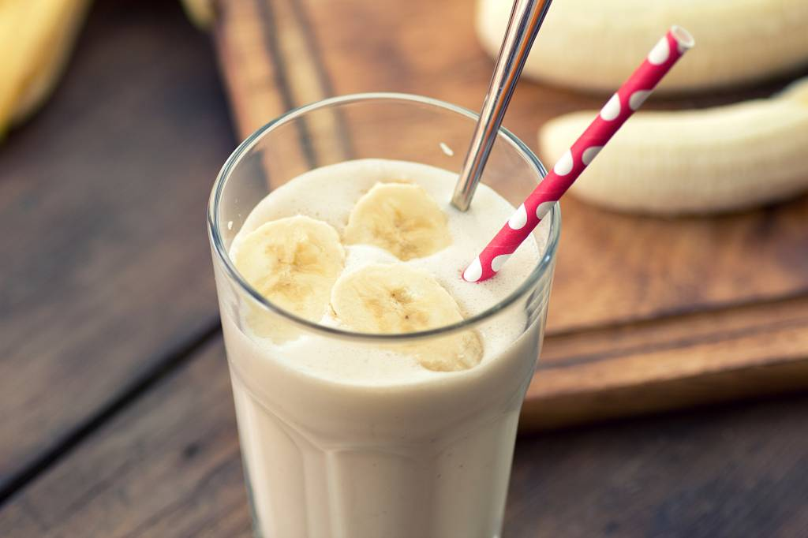

mit Vanilleglace
Zutaten
- 2.5 dl Milch
- 1 Kugel Vanilleglace
- 1 Banance
- 1/2 Packung Vanillezucker
Anleitung
Alle Zutaten zusammenmixen und kühl geniessen. Tipp: Der Shake schmeckt besonders gut mit einem «Gutsch» Baileys Likör und zusätzlichen Eiswürfeln.